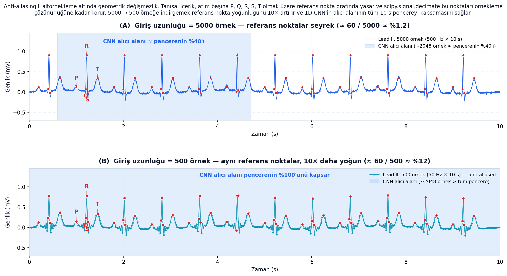
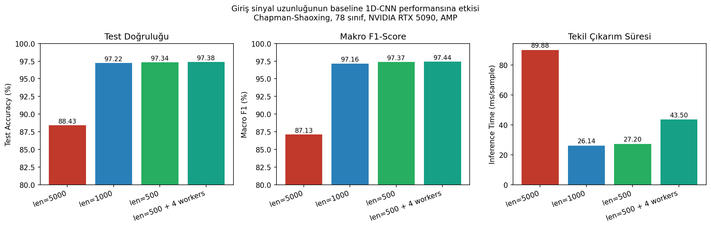

Chapman–Shaoxing veri seti üzerinde temel bir 1D-CNN, %88.43'ten %97.34'e —
ne attention, ne LSTM, ne focal loss; yalnızca scipy.signal.decimate ile 5000 → 500 örnek.
Önceki tez döneminde Chapman–Shaoxing üzerinde eğittiğimiz 1D-CNN, %88.43 test doğruluğu ve makro-F1 0.8713 ile durdu. 78 etiketten 11'i F1 < 0.60'da çöktü. Doğal refleks: attention katmanı, LSTM dalı, focal loss, etiket-taksonomi temizliği.
88.43%
5000 örnek, attention yok, focal loss yok.
94.8%
Attention + LSTM + augmentation + focal loss + adaptive threshold.
97.34%
Aynı baseline 1D-CNN + 5000 → 500 anti-aliased decimation.
Hedefe, mimari değiştirilmeden ulaşıldı.
Tek değişiklik bir scipy çağrısı.
EKG'nin tanısal içeriği seyrek bir referans-nokta grafında (P, Q, R, S, T) yaşıyorsa ve örneklerin %98'i sadece taban-interpolasyonuysa, neden tüm 5000 örneği saklayalım?
500 Hz
0.5–150 Hz
±3σ kırpma
12 × 5000
≥ 0.85
5000 → 1000 / 500
destek-düğüm
Chapman–Shaoxing 12 kanallı EKG (45.152 kayıt, 78 çoklu-etiket sınıf). Baseline 1D-CNN (3.72 M parametre). Stratified 68/12/20 split, sabit seed. NVIDIA RTX 5090, AMP (FP16). PyTorch 2.4 · SciPy 1.13.
from scipy.signal import decimate # factor = 5 → 5000 → 1000 örnek (etkin 100 Hz) # factor = 10 → 5000 → 500 örnek (etkin 50 Hz) x_down = decimate(x, factor, ftype='iir', # Chebyshev tip-I alt-geçiren n=8, # filtre derecesi zero_phase=True) # P-dalgası fazını korur
İleri-geri uygulanan filtre, P-dalgası ve QRS zamanlamasını kaydırmaz.
Yeni Nyquist'e kadar olan içerik silinir; QRS bandına örtüşme olmaz.
Bir kez kabul anında uygulanır; eğitim ve çıkarım maliyeti sıfır.
Seed, augmentation, ayırma — baseline ile birebir aynı; kazanç yalnız buradan.

| Konfigürasyon | Giriş şekli | Parametre | Epoch süresi | Erken durdurma |
|---|---|---|---|---|
| len=5000 (baseline) | 12 × 5000 | 3.72 M | ~195 s | 92. epoch |
| len=1000 | 12 × 1000 | 3.72 M | ~32 s | 92. epoch |
| len=500 | 12 × 500 | 3.72 M | ~30 s | 100. epoch |
| len=500 + 4 workers | 12 × 500 | 3.72 M | ~20 s | 100. epoch |
Adam (LR 1e-3, ReduceLROnPlateau), batch 64, BCE + ters frekans ağırlığı, EarlyStopping (sabır 10). Focal loss veya yeniden dengeleme uygulanmadı — atfetmeyi temiz tutmak için.
| Konfigürasyon | Test doğr. | Makro F1 | Çıkarım | Güven |
|---|---|---|---|---|
| len=5000 (baseline) | 88.43% | 0.8713 | 89.88 ms | 12.89% |
| len=1000 | 97.22% | 0.9716 | 26.14 ms | 68.88% |
| len=500 | 97.34% | 0.9737 | 27.20 ms | 76.23% |
| len=500 + 4 workers | 97.38% | 0.9744 | 43.50 ms | 69.59% |
| Sınıf | len=5000 | len=500 | Δ |
|---|---|---|---|
| Sol Ventriküler Hipertrofi | 0.022 | ≥ 0.99 | +0.97 |
| EKG: Q dalga anormal | 0.180 | ≥ 0.99 | +0.81 |
| İç ileti farklılıkları | 0.286 | ≥ 0.98 | +0.70 |
| AV blok | 0.324 | 0.984 | +0.66 |
| Erken atriyal kasılma | 0.329 | ≥ 0.97 | +0.64 |
| EKG: atriyal fibrilasyon | 0.436 | ≥ 0.95 | +0.51 |
| EKG: ST segment değişimi | 0.457 | ≥ 0.96 | +0.50 |
| ST segment anormal | 0.474 | ≥ 0.96 | +0.49 |
| 1. derece AV blok | 0.497 | ≥ 0.96 | +0.46 |
| EKG: atriyal flatter | 0.581 | ≥ 0.99 | +0.41 |
| EKG: atriyal taşikardi | 0.598 | ≥ 0.98 | +0.38 |

2048 örneklik CNN penceresi 5000'de %40'ı, 500'de %100'ü kapsar — ritm bağlamı artık erişilebilir.
~60 fiducial nokta 5000 pozisyonun %1.2'sinden 500 pozisyonun %12'sine — gradyan 10× yoğunlaşır.
Aynı 3.72 M parametre, taban modellemekten morfoloji ayrımına yeniden tahsis edilir.
Filtresiz strided pooling ön denemelerimizde QRS enerjisini alt frekansa örtüştürür ve baseline'dan da düşük doğruluk verir. Chebyshev-I filtresi, +10 pp F1 ile baseline-altı arasındaki farkı yapar.
12 kanallı EKG girişinin 5000 → 500 örneğe anti-aliasing'li altörneklenmesi, temel 1D-CNN baseline'ını, attention-hibrit halefi için yayımlanan %94.8 hedefini — modelde, kayıpta veya artırma reçetesinde hiçbir değişiklik yapmadan — aşan bir modele dönüştürür.
Teşekkürler. Sorular için: ←/→ slayt indeksi, Esc kapatır.